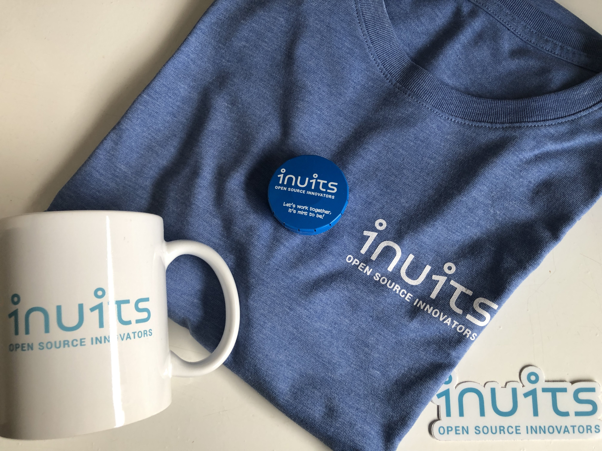

In semester zes moeten wij, de studenten van Howest op stage. Ik ben de laatste jaren geïnteresseerd geworden in Linux en alles met betrekking tot Open Source. Voor mijn stage heb ik beslist om bij een Open Source Linux bedrijf te gaan werken.
Ik heb dit bedrijf leren kennen op de stagemarkt van Howest. Ik had na een gesprek onmiddellijk een mail gestuurd. Ik had dan ook vrij snel een antwoord en na wat heen en weer te mailen, lag mijn stageplaats vast bij Inuits.
Inuits is zoals eerder vermeld een Open Source Linux consultancy bedrijf die op maat gemaakte oplossingen maakt voor bedrijven met volledig Open Source Software. Je kan meer over hen vinden op hun site.
Omdat Inuits vooral aan consultancy doet, zitten veel van de werknemers afgezonderd van overige Inuits teamleden. Hun oplossing hiervoor, noemt Last Friday. Op deze dag komt het team samen voor een soort mini, zelf georganiseerde workshop.
Ik had het geluk dat ik voor de covid-19 crisis uitbraak in België nog deel kon nemen aan een Last Friday evenement. Er werden kleine workshops aangeboden. Eerst was er een workshop rond test driven development en daarna heb ik deelgenomen aan een workshop rond Traffic on Kubernetes. Ik heb die rond Traffic on Kubernetes gekozen omdat ik meer wou bijleren rond de werking van Kubernetes.
In deze workshop hebben we een site gedeployed aan de hand van wat online tutorials. Iedereen moest 5 minuten aan de laptop zitten. Om de vijf minuten werd er doorgschoven.
Na deze workshop hebben we nog wat bijgepraat met wat mensen bij Inuits rond allerhande Linux topics. De tijd vloog voorbij en voordat we het doorhadden, was het al 18 uur.
Als je een student bent, die zich veel bezig houdt met Linux, dan kan ik Inuits zeker aanraden als stageplaats. Je zal enorm veel tools leren gebruiken, waar je waarschijnlijk nooit meer zonder zal kunnen. De sfeer zit ook altijd goed en er is veel ruimte om vragen te stellen. Ik ben erg blij dat ik daar mijn stage mag doen.
Matthias Antierens
 Picture of the goodies that I got on my first day as an intern at Inuits!